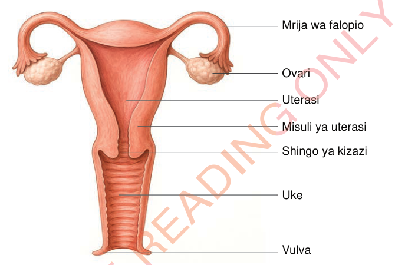

Mfumo wa uzazi wa mwanamke
Mfumo wa uzazi wa mwanamke unahusika na uzalishaji wa mayai au gameti uke, utoaji wa homoni kama oestrojeni na projesteroni, na kutoa mazingira ya kutungwa kwa mimba na ukuaji wa mtoto.
Homoni hizo husaidia kudhibiti mzunguko wa hedhi, ukuaji wa ogani za uzazi na ujauzito. Mfumo huu umeundwa na sehemu kuu nne, ambazo ni ovari, mirija ya falopio, uterasi na uke. Kielelezo namba 2 kinaonesha sehemu za mfumo wa uzazi wa mwanamke.
